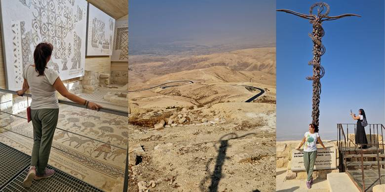
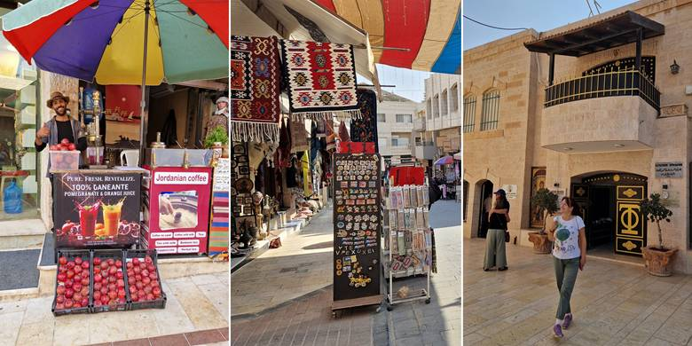
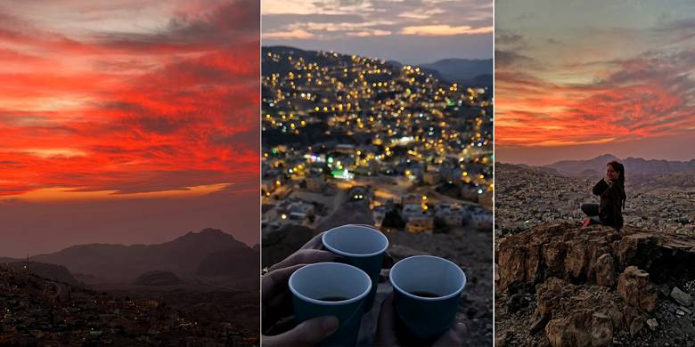

Planina Nebo i Mojsijev pogled
Kod planine Nebo se plaća ulaz. Ne vredi Jordan pass. Drugarica je samo prošetala pokazujući Jordan pass, nije ni primetila da treba da se plati. Zavitlavamo je da se promangupisala.
Prilaz je lepo sređen, u zelenilu je, što nije karakteristično za Jordan. Nema puno da se hoda.
Kad je vedro, vidi se Izrael i Obećana zemlja koju je Mojsije video pred smrt. Uglavnom, gde god pogledaš, suvo.
Ima i veliki krst i disk od kamena koji je služio kao vrata.
Meni se najviše dopao mozaik u crkvi gde su prikazani i crnac i belac i divlje životinje (zebra, žirafa, noj) i domaće životinje (ovca, krava, koza).
Mesto je hodočašća. Ima religijski značaj. Važno je mesto za hrišćane, Jevreje i muslimane zbog Mojsijeve priče.
Pitoma Madaba i umetnost mozaika
U Madabi smo videli crkvu Svetog Đorđa (moja devojačka slava), grčko-pravoslavnu crkvu iz 19. veka, koja je izgrađena na ostatcima ranijih crkava iz vizantijskog perioda.
Poznata je po mozaiku Mape Svete zemlje, najpoznatijem mozaiku u Jordanu.
Mozaik prikazuje Palestinu i Jerusalim iz 6. veka, sa detaljima hrišćanskih i antičkih gradova.
Dimenzije su oko 6 × 6 metara, izrađen od hiljada kamenčića. Smatra se najstarijom kartom Svete zemlje očuvanom do danas.
Takođe je mesto hodočašća. Lepo je uređeno i oko crkve. Masline ograđene klupama.
Našli smo i mozaike u Madabi. Meni je Madaba slatka jer je pitoma.
Nije divlja kao Aman, gde je lud saobraćaj, svi se ubacuju sa svih strana, trubkaju (ne baš kao u Indiji, neprekidno).
Išli smo ulicama zabranjenim za saobraćaj, duž kojih su prodavnice, suvenirnice, restorani, prodavci ceđenog soka od nara i narandže.
Kupljene su beduinske marame, bordo pantalone na zlatne slonove, mozaici, magneti, a za malo i tradicionalna haljina za susret sa Petrom, ali su baš bile najlonske.
Ljudi koji su pravili mozaike su me pozvali da im se pridružim.
Zalazak sunca u Wadi Musi
Stižemo u Wadi Musu baš na zalazak sunca. Dok one gledaju smeštaj, ja tražim savršen kadar za slikanje.
Imamo tremu posle prvog amanskog smeštaja, ali hotel je u redu.
Dnevna soba tradicionalno uređena sa crveno-crnim klupama. Puno detalja u drvetu.
Gore terasa sa pogledom na zalazak sunca i Wadi Musu.
Gazda Mahmud je ljubazan. Odvezao nas je na brdo gde je još trajao zalazak. Skuvao nam je čaj.
Bilo je oblaka, pa je zalazak spektakularan sa crvenim nebom.
A onda su se u mraku popalila svetla u domovima i začuo se hodža sa molitvom preko zvučnika.
To smo nadalje često čuli. Ori se ceo grad i ima nekoliko molitvi dnevno.
